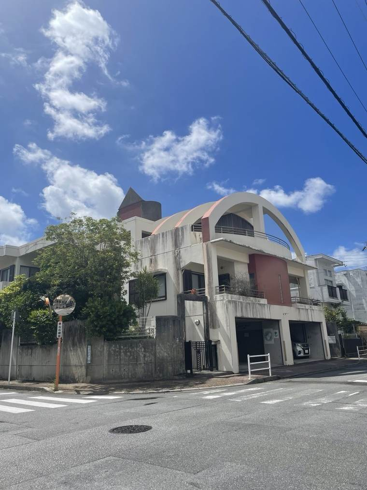
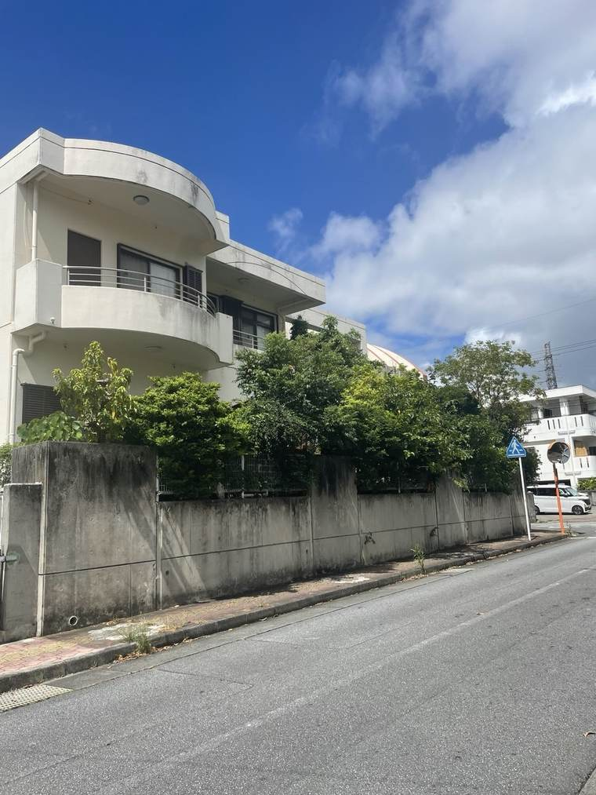
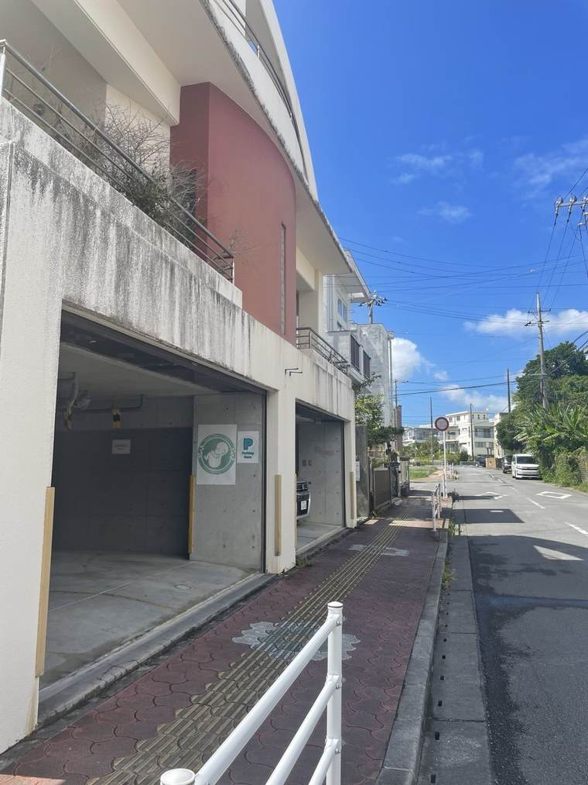
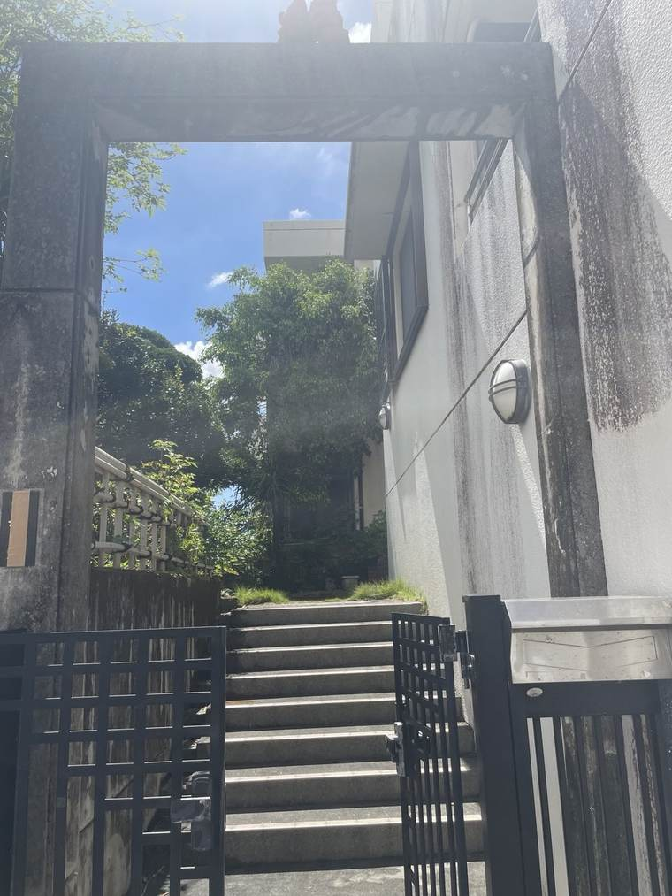
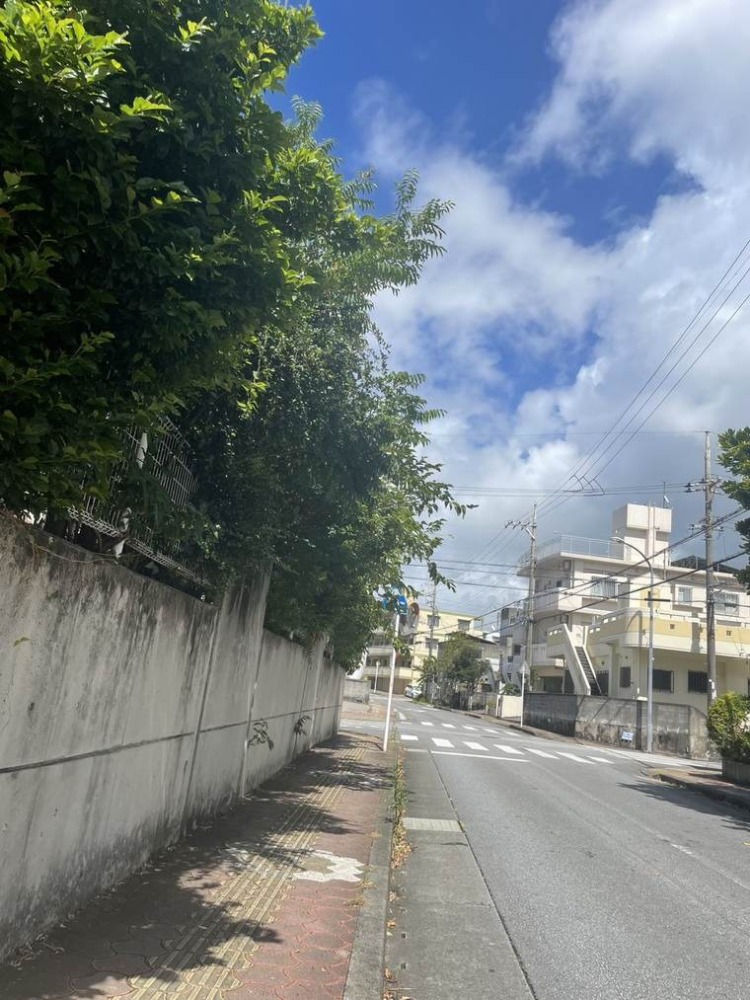
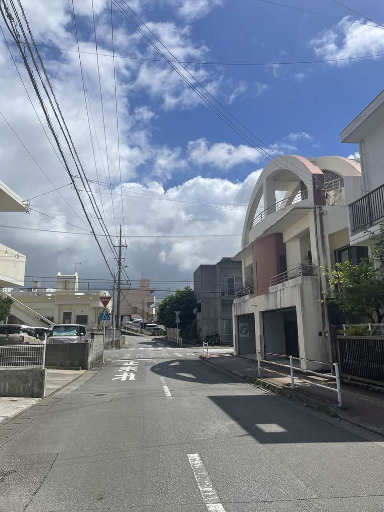
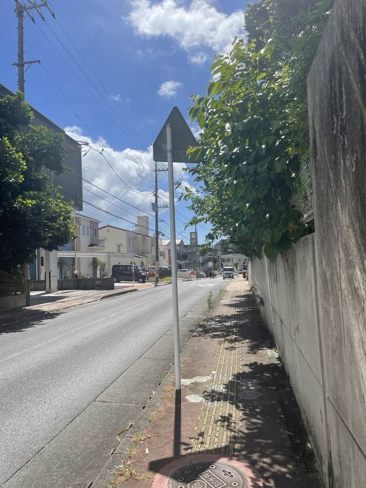
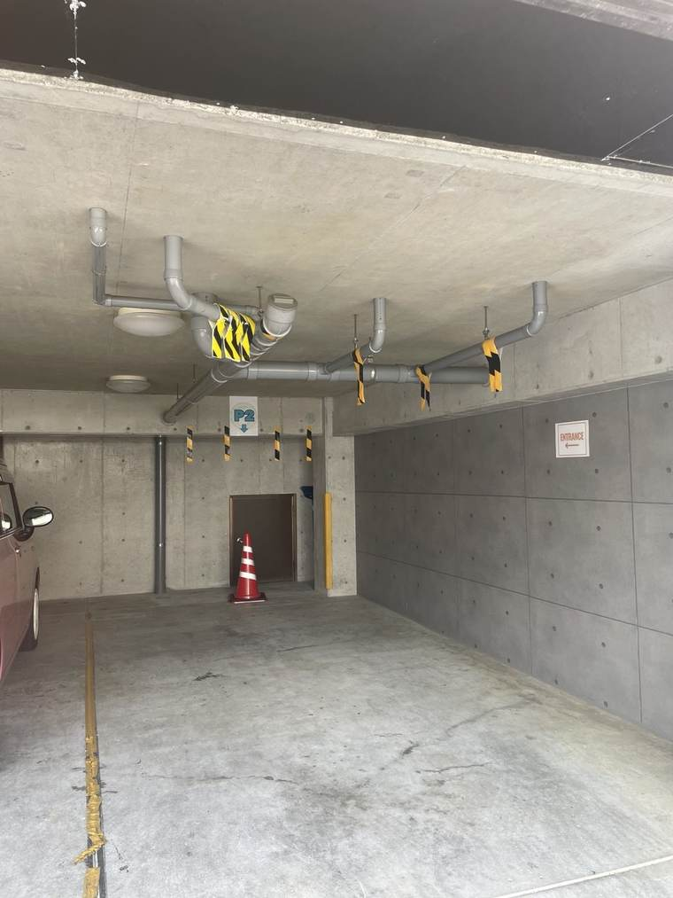

Our street has several similar-looking buildings, and our building has two garage entrances side by side, so it's easy to circle the block on your first visit.
Here's a photo-by-photo guide from the landmark building to our parking entrance.

As you approach on the main road, you'll see a 3-story building with a distinctive white arch on the rooftop. That's your landmark — it also has a pinkish-beige exterior.

Continue along the street that runs beside the building's wall and fence. The neighborhood has several similar-looking homes, so keep the arched roof in view as you go.

You've arrived when you see two shuttered garage entrances side by side on the ground floor of the building.

You'll see two garage doors next to each other. Check the sign in the next step before choosing which one to drive into.

Drive into the entrance where the pillar has a green "Family Tree Oki Clinic" logo sticker and a blue "Parking Here" sign.

These two signs (the logo and "Parking Here") are posted together on the entrance pillar. Once you see them, go ahead and pull into the garage.

Once inside the garage, follow the "ENTRANCE →" signage on the ceiling or wall to reach the clinic entrance.

From the garage level, go through the gate and up the short flight of steps to reach the clinic. Please take your time — no need to rush.
If you get turned around on the way, feel free to call us and we'll walk you in.
Call 070-4202-6260